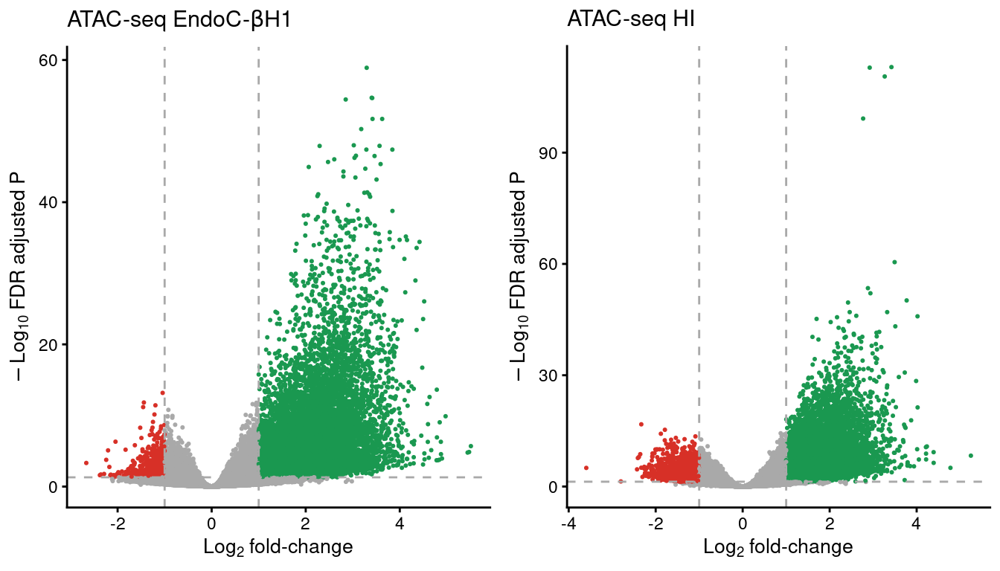

Run Rscript for generating the necessary quality control measures.
Rscript code/CYT_QC_ATAC.Rload("../data/CYT/ATAC/QC/ATAC_stats.rda")
load("../data/CYT/ATAC/QC/QC_scores.rda")
stats <- dplyr::left_join(stats, txt)
lib <-
ggplot(stats,
aes("Lib Size",
sampleID)) +
geom_tile(aes(fill=total_reads),
color="black", size=1) +
geom_text(aes(label=round(total_reads/1e6, 1))) +
scale_fill_gradient(low="white",
high="purple3",
limits=c(0, max(stats$total_reads)),
breaks=c(0, max(stats$total_reads)),
labels=c("0", "Max"),
name="Library size (x10^6)") +
guides(fill=guide_colourbar(ticks=FALSE,
frame.colour = "black",
frame.linewidth = 1)) +
theme(axis.line.x = element_blank(),
axis.ticks.x = element_blank(),
axis.title = element_blank())
align <-
ggplot(stats,
aes("% Align",
sampleID)) +
geom_tile(aes(fill=alignment_rate),
color="black", size=1) +
geom_text(aes(label=round(alignment_rate, 1))) +
scale_fill_gradient(low="white",
high="darkorange3",
limits=c(0, max(stats$alignment_rate)),
breaks=c(0, max(stats$alignment_rate)),
labels=c(0, "Max"),
name="% alignment") +
guides(fill=guide_colourbar(ticks=FALSE,
frame.colour = "black",
frame.linewidth = 1)) +
theme(axis.text.y=element_blank(),
axis.title=element_blank(),
axis.line=element_blank(),
axis.ticks=element_blank(),
plot.margin=margin(0,0,0,0, unit='pt'))
mit <-
ggplot(stats,
aes("% Mito",
sampleID)) +
geom_tile(aes(fill=chrM_rate),
color="black", size=1) +
geom_text(aes(label=round(chrM_rate, 1))) +
scale_fill_gradient(low="dodgerblue3",
high="white",
limits=c(0, max(stats$chrM_rate)),
breaks=c(0, max(stats$chrM_rate)),
labels=c("0", "Max"),
name="% Mitochondrial") +
guides(fill=guide_colourbar(ticks=FALSE,
frame.colour = "black",
frame.linewidth = 1)) +
theme(axis.text.y=element_blank(),
axis.title=element_blank(),
axis.line=element_blank(),
axis.ticks=element_blank(),
plot.margin=margin(0,0,0,0, unit='pt'))
nsc <-
ggplot(stats,
aes("NSC",
sampleID)) +
geom_tile(aes(fill=NSC),
color="black", size=1) +
geom_text(aes(label=round(NSC, 1))) +
scale_fill_gradient(low="white",
high="indianred4",
limits=c(1, max(stats$NSC)),
breaks=c(1, max(stats$NSC)),
labels=c("1", "Max"),
name="NSC") +
guides(fill=guide_colourbar(ticks=FALSE,
frame.colour = "black",
frame.linewidth = 1)) +
theme(axis.text.y=element_blank(),
axis.title=element_blank(),
axis.line=element_blank(),
axis.ticks=element_blank(),
plot.margin=margin(0,0,0,0, unit='pt'))
rsc <-
ggplot(stats,
aes("RSC",
sampleID)) +
geom_tile(aes(fill=RSC),
color="black", size=1) +
geom_text(aes(label=round(RSC, 1))) +
scale_fill_gradient(low="white",
high="turquoise4",
limits=c(0, max(stats$RSC)),
breaks=c(0, max(stats$RSC)),
labels=c("0", "Max"),
name="RSC") +
guides(fill=guide_colourbar(ticks=FALSE,
frame.colour = "black",
frame.linewidth = 1)) +
theme(axis.text.y=element_blank(),
axis.title=element_blank(),
axis.line=element_blank(),
axis.ticks=element_blank(),
plot.margin=margin(0,0,0,0, unit='pt'))
## Get legend -----------------------
lib.leg <- get_legend(lib)
al.leg <- get_legend(align)
mit.leg <- get_legend(mit)
nsc.leg <- get_legend(nsc)
rsc.leg <- get_legend(rsc)
leg <- plot_grid(lib.leg,
al.leg,
mit.leg,
nsc.leg,
rsc.leg,
nrow=1)
## Create heatmap --------------------------
heat <- plot_grid(lib + theme(legend.position="none"),
align + theme(legend.position="none"),
mit + theme(legend.position="none"),
nsc + theme(legend.position="none"),
rsc + theme(legend.position="none"),
nrow=1,
align='h',
rel_widths=c(0.30, rep(0.1750, 4))
)
## Final plot ----------------
qc <-
plot_grid(heat, leg, nrow=2, rel_heights = c(0.7, 0.3))
qcSumary of per-replicate sequencing metrics, showing total library sizes, percentage of aligned reads, percentage of mitochondrial aligned reads, normalized strand cross-correlation coefficient (NSC) and relative strand cross-correlation coefficient (RSC).
load("../data/CYT/ATAC/QC/ATAC_tss_enrichment.rda")
tss$dataset <- factor(tss$dataset, levels=c("TSS annotation", "Random control"))
tss$group <- gsub("[[:digit:]]*_", "_", tss$sample)
tss <- tss %>%
group_by(dataset, group, Position) %>%
summarise(mean=mean(mean))
tss.plot <-
ggplot(tss,
aes(Position, mean)) +
geom_line(aes(group=dataset, color=dataset), lwd=0.7) +
scale_color_manual(values=c("seagreen4", "goldenrod3"), name="Dataset") +
facet_wrap(~group, scales="free_y") +
theme(legend.position="top") +
ylab("Mean ATAC-seq read counts") + xlab("Position relative to TSS (bp)")
tss.plotEnrichment of ATAC-seq reads around protein-coding TSS compared to a randomized set of regions.
load("../data/CYT/ATAC/QC/ATAC_noise.rda")
stats$mean.errorbar <- stats$mean
stats <- stats[order(rev(stats$Annotation)),]
stats <- stats[stats$Annotation!="Unassigned",] %>%
group_by(group) %>%
mutate(cumsum=cumsum(mean))
noise <-
ggplot(stats[stats$Annotation!="Unassigned",],
aes(group, mean)) +
geom_bar(aes(fill=Annotation), stat="identity",
position="stack",
color="black", lwd=0.7) +
geom_errorbar(aes(ymin=cumsum, ymax=cumsum+sd,
group=Annotation),
width=.3, lwd=0.5) +
scale_fill_manual(values=c("violetred", "dark orange")) +
scale_y_continuous(name="Percentage of reads in peaks (%)") +
theme(axis.text.x=element_text(angle=30, hjust=1),
legend.position="top",
axis.title.x=element_blank())
noiseSignal-to-noise ratios of ATAC-seq reads located at called peaks vs reads outside peaks.
Rscript code/QC_CORR_genome.R data/CYT/ATAC/BAM/ data/CYT/ATAC/QC/
Rscript code/QC_CORR_genome.R data/CYT/H3K27ac/BAM/ data/CYT/H3K27ac/QC/
Rscript code/QC_CORR_genome.R data/CYT/RNA/BAM/ data/CYT/RNA/QC/ get_upper_tri <- function(cormat){
cormat[lower.tri(cormat)]<- NA
return(cormat)
}
get_lower_tri <- function(cormat){
cormat[upper.tri(cormat)]<- NA
return(cormat)
}load("../data/CYT/ATAC/QC/COR_10kb_norm.rda")
mat <- counts
cor.mat.ctrl <- get_lower_tri(cor(mat[,grep("ctrl", colnames(mat))], method="pearson"))
ctrl.m <- reshape2::melt(cor.mat.ctrl, na.rm=TRUE)
c.ctrl.atac <-
ggplot(data = ctrl.m, aes(Var2, Var1, fill = value))+
geom_tile(color = "black", lwd=0.7)+
scale_fill_gradient2(low = "white", high = "slateblue4", mid = "skyblue2",
midpoint = 0.5, limit = c(0,1), space = "Lab",
name="Pearson\nCorrelation") +
geom_text(aes(label=round(value, 2)), size=3) +
theme_minimal() +
theme(axis.text.x = element_text(angle = 45, vjust = 1,
size = 12, hjust = 1),
axis.title=element_blank(),
panel.grid.major = element_blank(),
legend.position="none") +
coord_fixed() +
ggtitle("ATAC-seq genome-wide correlation")
cor.mat.cyt <- get_upper_tri(cor(mat[,grep("cyt", colnames(mat))], method="pearson"))
cyt.m <- reshape2::melt(cor.mat.cyt, na.rm=TRUE)
c.cyt.atac <-
ggplot(data = cyt.m, aes(Var2, Var1, fill = value))+
geom_tile(color = "black", lwd=0.7)+
scale_fill_gradient2(low = "white", high = "slateblue4", mid = "skyblue2",
midpoint = 0.5, limit = c(0,1), space = "Lab",
name="Pearson\nCorrelation") +
geom_text(aes(label=round(value, 2)), size=3) +
theme_minimal() +
theme(axis.text.x = element_text(angle = 45, vjust = 1,
size = 12, hjust = 1),
axis.title=element_blank(),
legend.justification = c(1, 0),
legend.position = c(0.6, 0.75),
legend.direction = "horizontal",
panel.grid.major = element_blank()) +
coord_fixed() +
guides(fill = guide_colorbar(barwidth = 7, barheight = 1,
title.position = "top", title.hjust = 0.5))
cor.rep.atac <- plot_grid(c.ctrl.atac, c.cyt.atac)
cor.rep.atacATAC-seq correlation using the number of reads in a 10kb binned genome normalized with DESeq2.
load("../data/CYT/H3K27ac/QC/COR_10kb_norm.rda")
mat <- counts
cor.mat.ctrl <- get_lower_tri(cor(mat[,grep("ctrl", colnames(mat))], method="pearson"))
ctrl.m <- reshape2::melt(cor.mat.ctrl, na.rm=TRUE)
c.ctrl.H3K27ac <-
ggplot(data = ctrl.m, aes(Var2, Var1, fill = value))+
geom_tile(color = "black", lwd=0.7)+
scale_fill_gradient2(low = "white", high = "slateblue4", mid = "skyblue2",
midpoint = 0.5, limit = c(0,1), space = "Lab",
name="Pearson\nCorrelation") +
geom_text(aes(label=round(value, 2)), size=3) +
theme_minimal() +
theme(axis.text.x = element_text(angle = 45, vjust = 1,
size = 12, hjust = 1),
axis.title=element_blank(),
panel.grid.major = element_blank(),
legend.position="none") +
coord_fixed() +
ggtitle("H3k27ac genome-wide correlation")
cor.mat.cyt <- get_upper_tri(cor(mat[,grep("cyt", colnames(mat))], method="pearson"))
cyt.m <- reshape2::melt(cor.mat.cyt, na.rm=TRUE)
c.cyt.H3K27ac <-
ggplot(data = cyt.m, aes(Var2, Var1, fill = value))+
geom_tile(color = "black", lwd=0.7)+
scale_fill_gradient2(low = "white", high = "slateblue4", mid = "skyblue2",
midpoint = 0.5, limit = c(0,1), space = "Lab",
name="Pearson\nCorrelation") +
geom_text(aes(label=round(value, 2)), size=3) +
theme_minimal() +
theme(axis.text.x = element_text(angle = 45, vjust = 1,
size = 12, hjust = 1),
axis.title=element_blank(),
legend.justification = c(1, 0),
legend.position = c(0.6, 0.75),
legend.direction = "horizontal",
panel.grid.major = element_blank()) +
coord_fixed() +
guides(fill = guide_colorbar(barwidth = 7, barheight = 1,
title.position = "top", title.hjust = 0.5))
cor.rep.H3K27ac <- plot_grid(c.ctrl.H3K27ac, c.cyt.H3K27ac)
cor.rep.H3K27acH3K27ac ChIP-seq correlation using the number of reads in a 10kb binned genome normalized with DESeq2.
load("../data/CYT/RNA/QC/COR_10kb_norm.rda")
cor.mat.ctrl <- get_lower_tri(cor(mat[,grep("ctrl", colnames(mat))], method="pearson"))
ctrl.m <- reshape2::melt(cor.mat.ctrl, na.rm=TRUE)
c.ctrl.RNA <-
ggplot(data = ctrl.m, aes(Var2, Var1, fill = value))+
geom_tile(color = "black", lwd=0.7)+
scale_fill_gradient2(low = "white", high = "slateblue4", mid = "skyblue2",
midpoint = 0.5, limit = c(0,1), space = "Lab",
name="Pearson\nCorrelation") +
geom_text(aes(label=round(value, 2)), size=3) +
theme_minimal() +
theme(axis.text.x = element_text(angle = 45, vjust = 1,
size = 12, hjust = 1),
axis.title=element_blank(),
panel.grid.major = element_blank(),
legend.position="none") +
coord_fixed() +
ggtitle("RNA-seq genome-wide correlation")
cor.mat.cyt <- get_upper_tri(cor(mat[,grep("cyt", colnames(mat))], method="pearson"))
cyt.m <- reshape2::melt(cor.mat.cyt, na.rm=TRUE)
c.cyt.RNA <-
ggplot(data = cyt.m, aes(Var2, Var1, fill = value))+
geom_tile(color = "black", lwd=0.7)+
scale_fill_gradient2(low = "white", high = "slateblue4", mid = "skyblue2",
midpoint = 0.5, limit = c(0,1), space = "Lab",
name="Pearson\nCorrelation") +
geom_text(aes(label=round(value, 2)), size=3) +
theme_minimal() +
theme(axis.text.x = element_text(angle = 45, vjust = 1,
size = 12, hjust = 1),
axis.title=element_blank(),
legend.justification = c(1, 0),
legend.position = c(0.6, 0.75),
legend.direction = "horizontal",
panel.grid.major = element_blank()) +
coord_fixed() +
guides(fill = guide_colorbar(barwidth = 7, barheight = 1,
title.position = "top", title.hjust = 0.5))
cor.rep.RNA <- plot_grid(c.ctrl.RNA, c.cyt.RNA)
cor.rep.RNARNA-seq correlation using the number of reads in a 10kb binned genome normalized with DESeq2.
The differential analysis in the different assays is performed using DESeq2.
cd data/CYT/ATAC
Rscript ../../code/CYT_diffAnalysis_DESeq2_chrom.R -f 1 -q 0.05 -b TRUE -s hi -e ATAC
Rscript ../../code/CYT_diffAnalysis_DESeq2_chrom.R -f 1 -q 0.05 -b TRUE -s endoc -e ATACload("../data/CYT/ATAC/diffAnalysis/ATAC_endoc_fc1_padj0.05_GRangesBatch.rda")
table(res.gr$type, res.gr$annotation)
Distal Promoter
gained 12240 267
lost 679 9
stable 171672 13354volc_ec <-
ggplot(data.frame(res.gr),
aes(log2FoldChange, -log10(padj))) +
geom_point(aes(color=type), size=0.4) +
scale_color_manual(values=pals$differential,
name="RE type") +
geom_vline(xintercept=c(1,-1), linetype=2, color="dark grey") +
geom_hline(yintercept=-log10(0.05), linetype=2, color="dark grey") +
xlab(expression(Log[2]*" fold-change")) + ylab(expression(-Log[10]*" FDR adjusted P")) +
ggtitle(expression("ATAC-seq EndoC-"*beta*H1)) +
theme(legend.position="none")load("../data/CYT/ATAC/diffAnalysis/ATAC_hi_fc1_padj0.05_GRangesBatch.rda")
table(res.gr$type, res.gr$annotation)
Distal Promoter
gained 14505 462
lost 4544 115
stable 295383 18090volc_hi <-
ggplot(data.frame(res.gr),
aes(log2FoldChange, -log10(padj))) +
geom_point(aes(color=type), size=0.4) +
scale_color_manual(values=pals$differential,
name="RE type") +
geom_vline(xintercept=c(1,-1), linetype=2, color="dark grey") +
geom_hline(yintercept=-log10(0.05), linetype=2, color="dark grey") +
xlab(expression(Log[2]*" fold-change")) + ylab(expression(-Log[10]*" FDR adjusted P")) +
ggtitle(expression("ATAC-seq HI")) +
theme(legend.position="none")plot_grid(volc_ec,
volc_hi,
ncol=2)
cd data/CYT/H3K27ac
Rscript ../../code/CYT_diffAnalysis_DESeq2_chrom.R -f 1 -q 0.05 -b TRUE -s hi -e H3K27ac
Rscript ../../code/CYT_diffAnalysis_DESeq2_chrom.R -f 1 -q 0.05 -b TRUE -s endoc -e H3K27accd data/CYT/RNA
Rscript ../../code/CYT_diffAnalysis_DESeq2_rna.R -f 1 -q 0.05 -b TRUE -s hi
Rscript ../../code/CYT_diffAnalysis_DESeq2_rna.R -f 1 -q 0.05 -b TRUE -s endoc
sessionInfo()R version 3.6.3 (2020-02-29)
Platform: x86_64-w64-mingw32/x64 (64-bit)
Running under: Windows 10 x64 (build 18362)
Matrix products: default
locale:
[1] LC_COLLATE=Spanish_Spain.1252 LC_CTYPE=Spanish_Spain.1252
[3] LC_MONETARY=Spanish_Spain.1252 LC_NUMERIC=C
[5] LC_TIME=Spanish_Spain.1252
attached base packages:
[1] stats graphics grDevices utils datasets methods base
other attached packages:
[1] dplyr_0.8.5 cowplot_1.0.0 ggplot2_3.3.0 workflowr_1.6.1
loaded via a namespace (and not attached):
[1] Biobase_2.46.0 bit64_0.9-7
[3] splines_3.6.3 Formula_1.2-3
[5] assertthat_0.2.1 highr_0.8
[7] stats4_3.6.3 latticeExtra_0.6-29
[9] blob_1.2.1 GenomeInfoDbData_1.2.2
[11] yaml_2.2.1 RSQLite_2.2.0
[13] pillar_1.4.3 backports_1.1.5
[15] lattice_0.20-40 glue_1.3.2
[17] digest_0.6.25 GenomicRanges_1.38.0
[19] RColorBrewer_1.1-2 promises_1.1.0
[21] XVector_0.26.0 checkmate_2.0.0
[23] colorspace_1.4-1 htmltools_0.4.0
[25] httpuv_1.5.2 Matrix_1.2-18
[27] plyr_1.8.6 XML_3.99-0.3
[29] DESeq2_1.26.0 pkgconfig_2.0.3
[31] genefilter_1.68.0 zlibbioc_1.32.0
[33] xtable_1.8-4 purrr_0.3.3
[35] scales_1.1.0 jpeg_0.1-8.1
[37] later_1.0.0 BiocParallel_1.20.1
[39] annotate_1.64.0 git2r_0.26.1
[41] tibble_2.1.3 htmlTable_1.13.3
[43] farver_2.0.3 IRanges_2.20.2
[45] withr_2.1.2 SummarizedExperiment_1.16.1
[47] nnet_7.3-13 BiocGenerics_0.32.0
[49] survival_3.1-11 magrittr_1.5
[51] crayon_1.3.4 memoise_1.1.0
[53] evaluate_0.14 fs_1.3.2
[55] foreign_0.8-76 tools_3.6.3
[57] data.table_1.12.8 lifecycle_0.2.0
[59] matrixStats_0.56.0 stringr_1.4.0
[61] S4Vectors_0.24.3 locfit_1.5-9.4
[63] munsell_0.5.0 cluster_2.1.0
[65] DelayedArray_0.12.2 AnnotationDbi_1.48.0
[67] compiler_3.6.3 GenomeInfoDb_1.22.0
[69] rlang_0.4.5 grid_3.6.3
[71] RCurl_1.98-1.1 rstudioapi_0.11
[73] htmlwidgets_1.5.1 bitops_1.0-6
[75] base64enc_0.1-3 labeling_0.3
[77] rmarkdown_2.1 gtable_0.3.0
[79] DBI_1.1.0 reshape2_1.4.3
[81] R6_2.4.1 gridExtra_2.3
[83] knitr_1.28 bit_1.1-15.2
[85] Hmisc_4.4-0 rprojroot_1.3-2
[87] stringi_1.4.6 parallel_3.6.3
[89] Rcpp_1.0.4 geneplotter_1.64.0
[91] vctrs_0.2.4 rpart_4.1-15
[93] acepack_1.4.1 png_0.1-7
[95] tidyselect_1.0.0 xfun_0.12